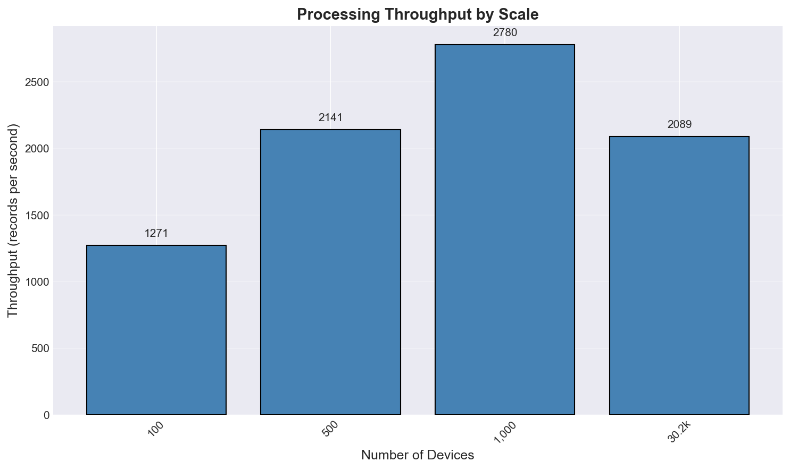
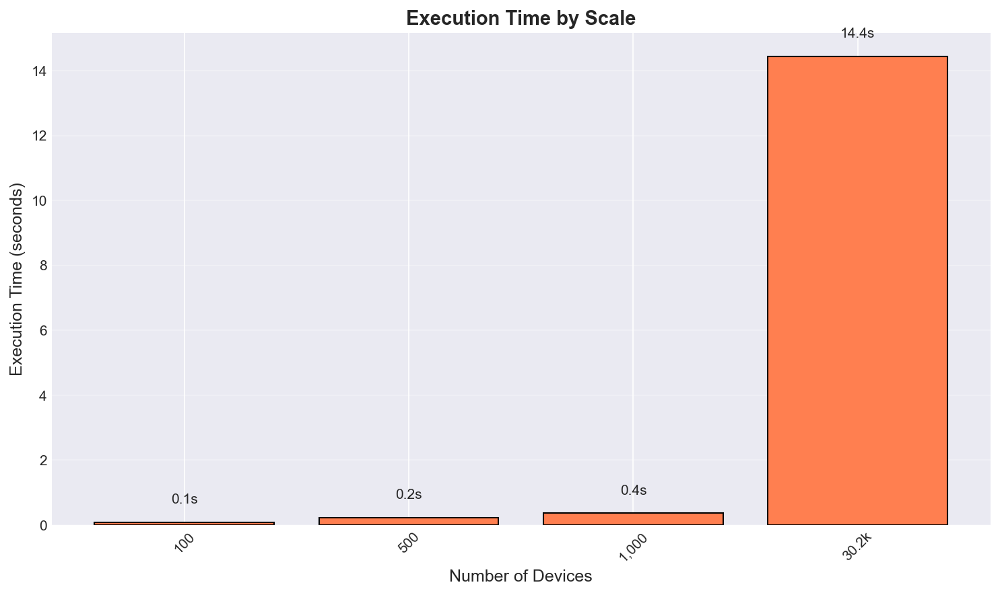
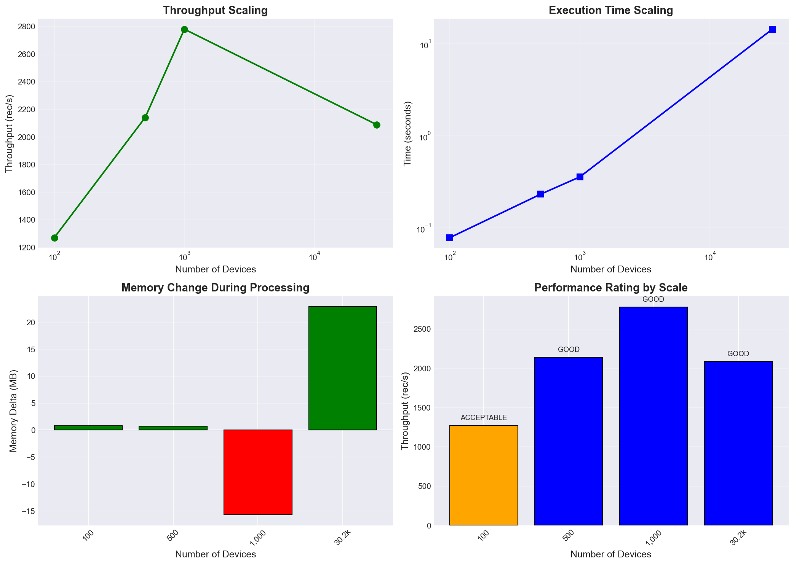
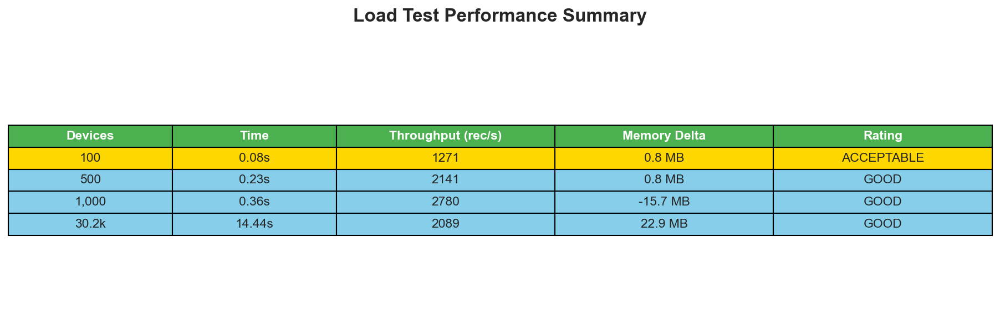
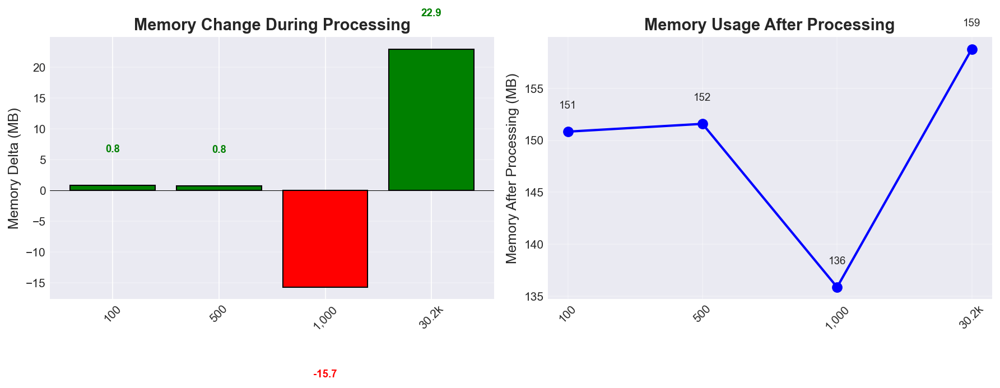
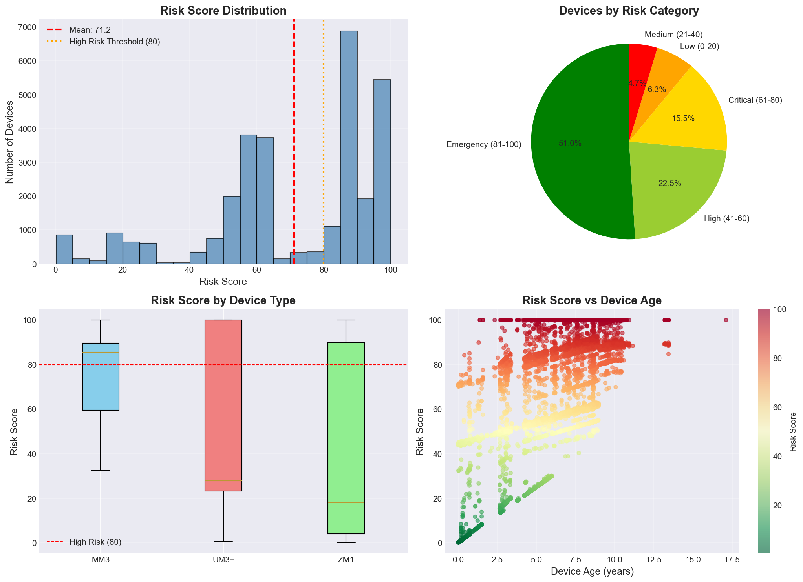

FCI Load Test Performance Report
Generated: 2026-03-30 17:11:55
Total Tests Run: 4
Largest Test: 30,153 devices
Performance Summary Table
Performance Graphs




Memory Analysis

Risk Score Analysis

Why This Matters
Risk Score Interpretation:
- 0-20 (Low): Devices are healthy, no action needed
- 21-40 (Medium): Minor issues, monitor closely
- 41-60 (High): Significant issues, plan maintenance
- 61-80 (Critical): Severe issues, immediate attention required
- 81-100 (Emergency): Device likely failing, replace urgently
Current Fleet Status: MEAN RISK = 71.2
⚠️ This indicates widespread device issues requiring maintenance action.
Key Findings
- Best Throughput: 2780 rec/s
- Handles 30,153 devices in 14.4 seconds
- Mean Risk Score: 71.2 (HIGH - action required)